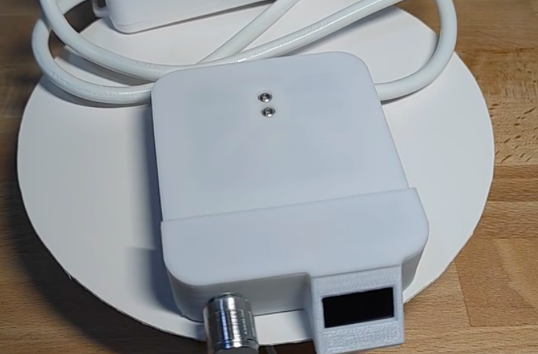

定量磨豆电子秤
使用说明 - OTA
这，是一个外挂电子秤，可以让你拥有万元级别磨豆机才有的定量磨豆功能。
OTA功能说明
 }})
 }})
 }})
说明：
因处于安全方面的考虑， 磨豆秤并没有赋予接入公网的功能，因此当您的电脑或手机接入 Grinder Scale 热点的时候， 当前设备暂时无法访问互联网， 一旦OTA完毕， 设备会自动断开磨豆秤 热点并接入之前可用网络， 方可正常使用。如果发现您的电脑或手机仍然连接在磨豆秤热点上， 请在WiFi设置中忽略此网络。
版本历史：
smart_coffee_grinder_scale_v3.0.bin
说明:增加了接粉杯自动触发功能。 注意：容器重量需大于80g。